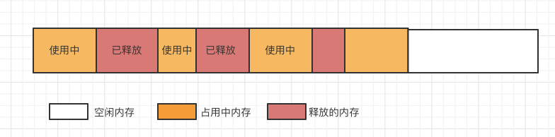

所有程序的运行，都需要内存。对于前端来说，JS 自身是没有内存管理能力和垃圾回收能力的，这一部分的工作会交给我们的浏览器引擎，我们最熟悉的应该就是 Chrome 浏览器的 V8 引擎 （下文都以 V8 来展开讨论） 。 在 C++当中，开发人员可以直接调用原生 API 来进行内存的开辟和回收。但是像 Javascript ，变量内存的申请和都由浏览器引擎来进行处理，作为前端开发，不需要关心分配内存和垃圾回收这一事项，简单来说就是 Javascript 具备了自动垃圾回收的机制。
前面讲了 V8 引擎会帮我们进行自动地垃圾回收，那我们为什么要进行垃圾回收呢？不要进行回收可以吗？答案肯定是不可以的。看看如下代码：
var test = { a: 1, b: 2 };
test = [1, 2, 3, 4, 5];
按照正常的代码逻辑，可以理解为，我们声明了一个变量 test ，他引用了 {a:1,b:2} 这个对象，然后我们就为 test 重新赋值。test 的地址就指向了 [1,2,3,4,5] 这个组数了。然后可以发现内存中，已没有了对 {a:1,b:2} 这个对象的引用
那么想象下如果 N 个这种对象保留在内存中，那么就会导致内存溢出了。但是浏览器引擎在这里帮我们做了自动的垃圾回收。下图解释了上面刚刚那个流程
作者：Fsn_soul
链接：https://www.jianshu.com/p/5c1805c6f0ff
来源：简书
著作权归作者所有。商业转载请联系作者获得授权，非商业转载请注明出处。

总结：要保证程序内存在程序运行中一直够用，那么就需要引入垃圾回收机制，
那么既然是自动地进行垃圾回收，那么我们又如何知道无用的内存(垃圾)何时被回收呢？如何回收。那么这个回收的流程，必须要引入一些比较高效的算法策略了 垃圾回收有以下最常见的两种策略：
稍微讲下标记清楚的缺点：引用计数的算法，两个变量均存在指向自身的引用，因此两个相互引用的对象无法被回收，导致内存泄漏。
这里因为 V8 及大部分浏览器引擎使用的是标记清除法，那么我们在本文只会围绕标记清楚法来进行讨论。
标记清除法（Mark-Sweep），主要分为了两个阶段。 标记阶段 和 清除阶段 标记阶段：从根对象出发，遍历内存中所有对象，并给对象都打上标记。 清除阶段：清除阶段则把没有标记（对象没有被使用（引用））进行销毁。
整个标记清除算法的一轮处理过程如下： 1、 给内存中的变量都打上标记 0 2、 然后从各个根对象开始遍历，把不是垃圾（还在使用的）的节点改成 1 3、 清理所有标记为 0 的垃圾，销毁该对象，回收它们所占用的内存空间 4、 最后，重新把所有内存中对象标记修改为 0，等待下一轮垃圾回收。
上述就是标准的标记清除法。但是上面所说的标记清除法有一缺点，就是垃圾回收后的内存，因为内存空间没有被重新整理，那么就导致了内存空间不连续了。

从上图可以看出被释放的内存由于未被整理，导致内存空间不连续，浪费了一定的内存空间
再来看看这种不连续的片段会为之后内存的使用有什么影响

V8 用的是标记清楚法。
那看看具体是如何进行的垃圾回收。
看看 V8 引擎是如何分配内存的（图片来源于网络）；

可以看得出 V8 的内存分布如下，每个区域都有对应的职能
新生代（new_space）：大部分对象一开始都会被分配到新生代区中，这个区域中的 GC 十分频繁
老生代(old_space)：属于老生代，这里只保存原始数据对象，这些对象没有指向其他对象的指针
大对象区(large_object_space)：这里存放体积超越其他区大小的对象，每个对象有自己的内存，垃圾回收其不会移动大对象区；
代码区(code_space) ：代码对象，会被分配在这里。存放可执行代码
map 区(map_space)：存放 Cell 和 Map，每个区域都是存放相同大小的元素，结构简单。(简单说：存储对象的映射关系的区域)
V8 的垃圾回收主要围绕 新生代区和老生代区进行，下面将围绕这两个区域进行讨论。 先引出两个区域各用了什么算法
新生代：Scavenge
老生代：Mark-Sweep & Mark-Compact
Mark-Sweep(标记清除): 分为了两个阶段， 标记 和 清楚 两个阶段。 Mark-Compact(标记整理):对不连续的碎片进行整理。移动对象在堆中的位置。
step1
step2
- 最少经历一次 scavenge
- scavenge 后 To 区域内存大于 25%时。
主要是用了 三色标记法，和前面提到的标记清除法 1/0 标记不一样。
白：未被标记的对象，即不可达对象（没有扫描到的对象），可回收 灰：已被标记的对象（可达对象），但是对象还没有被扫描完，不可回收 黑：已被扫描完（可达对象），不可回收 step3
进行老生代区后，使用的是标记清除法进行 GC
标记清楚会导致内存空间存在不连续的状态，因为我们清除的对象占用的内存地址可能是不连续的。
所以为了解决不连续的问题，就有了标记整理，将活动的对象往堆的一段进行移动，完成后再释放掉左/右边界的内存。所以标记清除法的整体流程就是标记 - 整理 - 清除